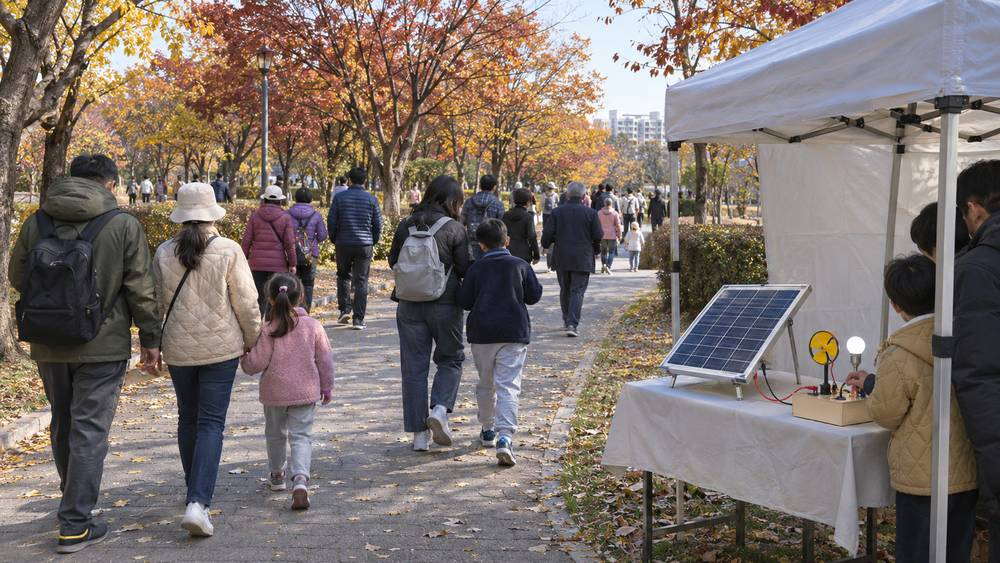
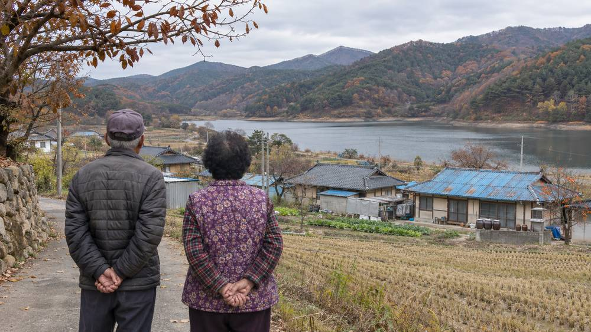
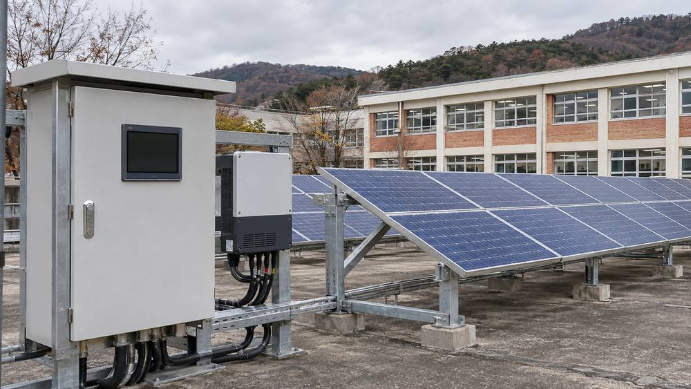
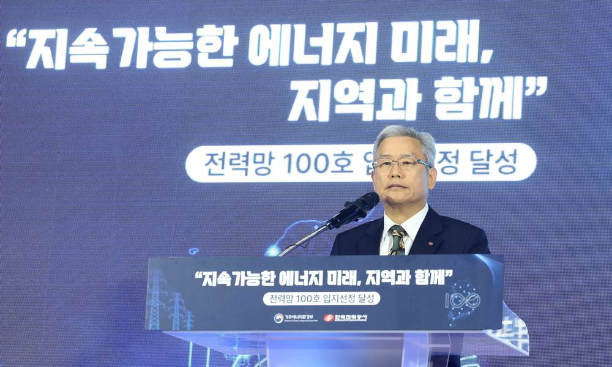
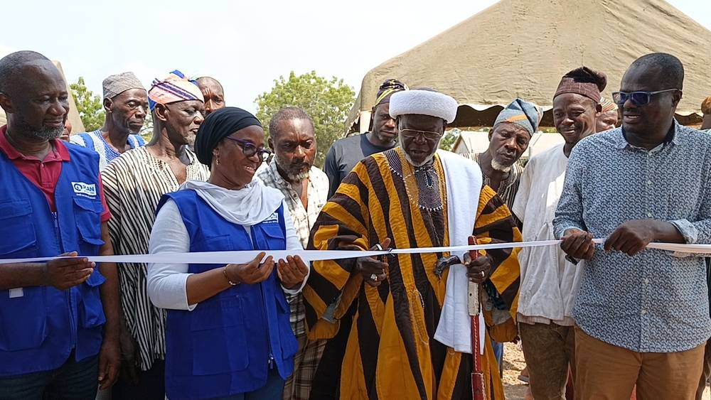
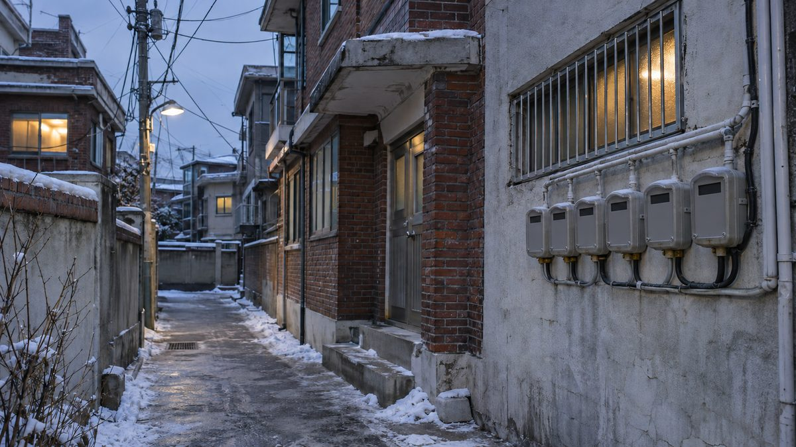

사회
안동 시민단체, 쇠제비갈매기 번식 모래섬서 집회…"K-water 안동댐 수상태양광 철회하라"
11개 기관·단체 60여 명 참여…수자원공사는 90MW→45MW로 줄이고 상류 도목리로 입지 변경 제시했지만 "새 비행 범위 수십㎞, 옮겨도 영향 못 피해"

"약값 3분의 1, 재고는 복불복"…반입 허용 첫 주말 '스시자로' 단톡방 들여다보니
해외 처방 비만치료제 3개월치 휴대 반입 허용 사흘 만에 오픈채팅방 대화 3,000건…"서류 의무 없다"지만 반복 반입은 식약처·관세청 엇박자, 일본 병원은 카톡 채널 열고 유치전

정부 '베란다형 태양광 10만 가구' 내걸었지만 수요는 목표의 13.6%…LH "참여 계획 없다", 아파트 현장은 설치·관리 부담 호소
올해 추경 국비 375억 원, 내년 750억 원·20만 가구로 확대 편성…하자보증 3~5년 지나면 수리비는 입주민 몫, 이사 때 철거·재설치도 숙제

세계태양광총회 앞두고 대전 시민 1,500명 '에너지 걷기'…총회는 20일까지 대전컨벤션센터에서
스탬프 워킹투어·에너지 OX 퀴즈·자전거 발전 체험…국내 첫 개최 WCPEC-9, 17일엔 대전특별세션

반도체 산단 물길·전깃길 아래 주민들 "먹고살 대책부터"…화순 수몰 예정지엔 연금 대신 태양광 소득 검토
동복댐 새 댐에 280여 가구 잠길 듯…고창 변전소는 '자발 유치' 내세웠지만 주민지원 협약은 아직

충남 학교 태양광 발전량 자료 '들쭉날쭉'…8개월 실적이 1년 치보다 36% 많거나 '0'으로 제출
도의회 교육위 행감서 홍북초·서남초 등 지적…교육지원청 "인버터 표시창 고장, 발전은 정상"

한전 송전망 입지선정 100건 넘어…연 25건에서 58건으로, 주민이 먼저 변전소 유치 신청한 첫 사례도
고창 성송면서 100호 기념행사…송전선로 규모 5.4배·변전소 용량 2.7배, 선로 주변 '계통햇빛소득마을' 추진

가나 북부 여성 창업가·농민 위한 태양광 허브 문 열어…60개 마을이 함께 쓴다
플랜인터내셔널 'WISE' 사업 결실…지역단체가 여성들 대신 운영·관리, 추장 "소중히 잘 써 달라"

호주 농촌 "재생에너지 반대 아냐, 제대로 된 발언권과 공정한 몫 달라"…NSW 3개 마을 연구
상반기에만 141개 사업 325억 호주달러…주민들 "강제력 있는 참여 기준·이익공유 틀 법에 넣어야"

송전망 보상 늘렸지만 "한전 주도 입지선정부터 바꿔야"…주민들 "변전소·선로 윤곽 잡는 첫 단계부터 참여"
정부, 지원금 최대 3분의 2 마을 배분·'계통햇빛소득마을' 선도사업 추진…전문가 "에너지계획·국토계획 함께 세워야"

SH 임대단지 지붕 태양광, 낮에 남는 전기는 관리비로 돌아오나…오중석 서울시의원 "요금상계 현황 공개하고 12월 말까지 전환 계획 내라"
LH가 세종 행복주택 238가구에서 공동주택 첫 요금상계 시작하자 같은 ZEB 3등급 고덕 온빛채 697가구 사례 따져…상계 안 되는 단지는 이유 목록부터

사회적기업 국제포럼, 주민이 운영하는 마을 태양광·공공자산 청년주택 등 국내외 8개 사례 나눠
고용노동부·한국사회적기업진흥원, 사회적기업육성법 19년 맞아 의료·돌봄·주거·에너지 분야의 지역 역할 점검

국회서 에너지 기본권 토론회…요금 지원 넘어 최소 보장기준·참여권·편익공유권 법제화 제안
서왕진 의원 주최, 고재경 환경정의 공동대표는 에너지전환 참여권·정보권·편익공유권, 김재경 에너지경제연구원 선임연구위원은 기본에너지·공급중단 방지의 에너지법 명시 제안

공공임대 아파트 태양광, 쓰고 남은 전기로 관리비 깎는다…LH, 세종 산울마을 4단지 238가구에 공동주택 첫 요금상계
태양광 246kW로 월 사용량의 약 49.1% 생산…LH "가구당 월평균 약 8,000원 추가 절감 기대", ZEB 5등급 이상 단지로 확대 검토

社会
安東の市民団体、コアジサシ繁殖の砂州で集会…「K-waterの安東ダム水上太陽光を撤回せよ」
11の機関・団体から約60人参加…水資源公社は90MW→45MWに縮小し上流の道木里への立地変更を示したが「飛行範囲は数十km、移しても影響は避けられない」
政府「ベランダ型太陽光10万世帯」掲げるも需要は目標の13.6%…LH「参加計画なし」、マンション現場は設置・管理の負担訴え
今年の補正予算で国費375億ウォン、来年は750億ウォン・20万世帯に拡大編成…瑕疵保証3~5年後の修理費は入居者負担、引っ越し時の撤去・再設置も課題
世界太陽光会議を前に大田市民1,500人が「エネルギーウォーク」…会議は20日まで大田コンベンションセンターで
スタンプウォーキングツアー・エネルギー○×クイズ・自転車発電体験…国内初開催のWCPEC-9、17日には大田特別セッション
半導体団地の水路・送電路の下の住民「まず生活の保障を」…和順の水没予定地には年金の代わりに太陽光収入を検討
同福ダムの新ダムで約280世帯が水没へ…高敞変電所は「自発的誘致」を掲げるも住民支援協約は未締結
忠清南道の学校太陽光、発電量データに「ばらつき」…8カ月分が1年分より36％多い、または「0」で提出
道議会教育委の行政監査で洪北小・西南小などを指摘…教育支援庁「インバーター表示窓の故障、発電は正常」
韓電の送電網立地選定が100件超え…年25件から58件に、住民が先に変電所誘致を申請した初の事例も
高敞・星松面で100号記念行事…送電線路規模5.4倍・変電所容量2.7倍、線路周辺で「系統日差し所得村」推進
送電網の補償は増えたが「韓電主導の立地選定から変えるべき」…住民「変電所・路線の輪郭を決める最初の段階から参加を」
政府、支援金の最大3分の2を集落に配分・「系統日差し所得村」先導事業を推進…専門家「エネルギー計画と国土計画を一体で」
SH賃貸団地の屋根の太陽光、昼に余った電気は管理費に戻るのか…オ・ジュンソク・ソウル市議「料金相殺の現況を公開し、12月末までに転換計画を」
LHが世宗の幸福住宅238世帯で共同住宅初の料金相殺を始めたのを受け、同じZEB3等級の高徳オンビッチェ697世帯の事例を追及…相殺できない団地は理由のリストから
社会的企業国際フォーラム、住民が運営する集落の太陽光や公共資産を使った若者住宅など国内外8事例を共有
雇用労働部と韓国社会的企業振興院、社会的企業育成法19年を迎え医療・介護・住まい・エネルギー分野での地域の役割を点検
国会でエネルギー基本権討論会…料金支援を超え最低保障基準・参加権・便益共有権の法制化を提案
ソ・ワンジン議員が主催、環境正義のコ・ジェギョン共同代表はエネルギー転換への参加権・情報権・便益共有権を、エネルギー経済研究院のキム・ジェギョン先任研究委員は基本エネルギーと供給停止防止のエネルギー法明記を提案
公共賃貸マンションの太陽光、使い切れなかった電気で管理費を減らす…LH、世宗サヌル村4団地238世帯で共同住宅初の料金相殺
太陽光246kWで月使用量の約49.1%を発電…LH「1世帯当たり月平均約8,000ウォンの追加節減を期待」、ZEB5等級以上の団地への拡大を検討
社会
韩国安东市民团体在小燕鸥繁殖沙洲集会："K-water撤回安东大坝水上光伏"
11个机构和团体约60人参加…水资源公社已从90兆瓦缩减至45兆瓦并提出迁往上游道木里，但团体称"飞行范围达数十公里，迁址也难避影响"
政府提出“阳台光伏10万户”目标，需求仅达13.6%…LH称“无参与计划”，公寓现场诉安装与管理负担
今年追加预算国费375亿韩元，明年拟增至750亿韩元、20万户…3至5年保修期过后维修费由住户承担，搬家时拆装也是难题
韩电输电网选址突破100项…从每年25项增至58项，首次出现居民主动申请引进变电站
高敞星松面举行第100项纪念活动…输电线路规模增5.4倍、变电站容量增2.7倍，线路周边推进"电网阳光收入村"
输电网补偿增加，但“应先改变韩电主导的选址”…居民要求“从划定变电站和线路轮廓的第一阶段起参与”
政府将支援金最多三分之二分配给村庄、推进“电网阳光收入村”示范项目…专家称“能源规划与国土规划应一并制定”
SH租赁小区屋顶太阳能白天余电能否抵扣物业费…首尔市议员吴仲锡："公开电费抵扣现状，12月底前提交转换计划"
LH在世宗幸福住宅238户启动公寓首例电费抵扣后，追问同为ZEB三级的高德Onbitche 697户…无法抵扣的小区先列出原因清单
国会举行能源基本权讨论会…提议超越电费补贴，将最低保障标准、参与权和利益共享权写入法律
议员Seo Wang-jin主办，环境正义共同代表Ko Jae-kyung提出能源转型参与权、知情权和利益共享权，能源经济研究院高级研究委员Kim Jae-kyung建议在能源法中写明基本能源和防止断供
公租公寓光伏用余电抵减物业费…LH在世宗山蔚村4区238户首次在共同住宅实施电费抵扣
246kW光伏发电量约占月用电量的49.1%…LH"预计每户每月平均再省约8,000韩元"，研究推广至ZEB 5级以上小区
Society
Andong civic groups rally on tern breeding sandbar, demand K-water drop Andong Dam floating solar plan
About 60 members from 11 organizations join; water agency has cut the plan from 90 MW to 45 MW and proposed moving upstream, but groups say terns range tens of kilometers
Government targets 100,000 homes for balcony solar, but demand reaches only 13.6%; LH opts out as apartment complexes cite installation and upkeep burdens
Supplementary budget of 37.5 billion won this year, with 75 billion won and 200,000 homes planned for next year; residents pay repairs once 3-5 year warranties end, and removal and reinstallation when moving remain unresolved
1,500 Daejeon residents join 'energy walk' ahead of World Conference on Photovoltaic Energy Conversion, running to Nov. 20
Stamp walking tour, energy quiz and bicycle-generator booths; Korea's first WCPEC-9 holds a Daejeon special session on the 17th
Geochang finally removed from candidate corridor for Sinjangsu–Muju Yeongdong power line; residents' opposition committee to disband on 25th
KEPCO siting committee drops eastern areas of Geochang, Hamyang and Gimcheon, citing Deogyusan and Baekdudaegan ecological corridor
Residents under the water and power lines for Korea's chip cluster ask for a livelihood first — solar income, not pensions, offered in Hwasun
About 280 households face flooding by a new dam; Gochang substation hailed as a 'voluntary' siting, but no resident support agreement yet
South Chungcheong school solar output records found erratic — eight months exceeding a full year by 36%, or reported as zero
Provincial council audit flags several schools; education office says one inverter display was broken but generation was normal
KEPCO passes 100 grid siting decisions, up from 25 a year to 58, including first substation requested by residents
100th-site ceremony held in Gochang; transmission line length up 5.4-fold and substation capacity 2.7-fold, with 'grid sunlight income villages' planned along routes
Solar hub for women entrepreneurs and farmers opens in northern Ghana, serving about 60 communities
Outcome of Plan International's WISE project; local group to run it on women's behalf as chief urges residents to 'cherish it'
Rural Australians back clean energy but want a real say and a fair share, study of three NSW towns finds
With 141 projects worth A$32.5 billion financed or underway in the first half alone, residents call for enforceable engagement standards and benefit-sharing rules
More compensation for grid lines, but residents say KEPCO-led siting must change first
Government to channel up to two-thirds of support funds to villages and pilot 'grid sunlight income villages'; expert urges joint energy and land-use planning
Is Surplus Daytime Power From Rooftop Solar on SH Rental Estates Cutting Tenants' Fees? Seoul Councillor Oh Jung-seok Demands Net-Billing Data and a Conversion Plan by End of December
After LH began Korea's first apartment net billing at 238 'happy housing' units in Sejong, Oh asked about SH's 697-unit Godeok Onbitche, built to the same ZEB grade 3; complexes that cannot switch should be listed with reasons
International Social Enterprise Forum Shares Eight Cases at Home and Abroad, from a Resident-Run Village Solar Plant to Youth Housing in Public Assets
Korea's labour ministry and social enterprise agency review the local role of social enterprises in health, care, housing and energy 19 years after the founding law
National Assembly forum on energy rights proposes writing minimum guarantees, participation and benefit-sharing rights into law, beyond bill subsidies
Hosted by lawmaker Seo Wang-jin; Ko Jae-kyung of Environmental Justice proposed rights to participate in, be informed about and share the benefits of the energy transition, and Kim Jae-kyung of the Korea Energy Economics Institute called for basic energy and protection from disconnection to be set out in the Energy Act
Public rental flats use surplus rooftop solar to cut maintenance fees as LH launches its first apartment net billing at Sejong's Sanul Maeul Complex 4, home to 238 households
246kW of solar produces about 49.1% of monthly consumption; LH "expects an extra saving of about 8,000 won per household a month" and is considering extending the scheme to ZEB grade 5 or better complexes